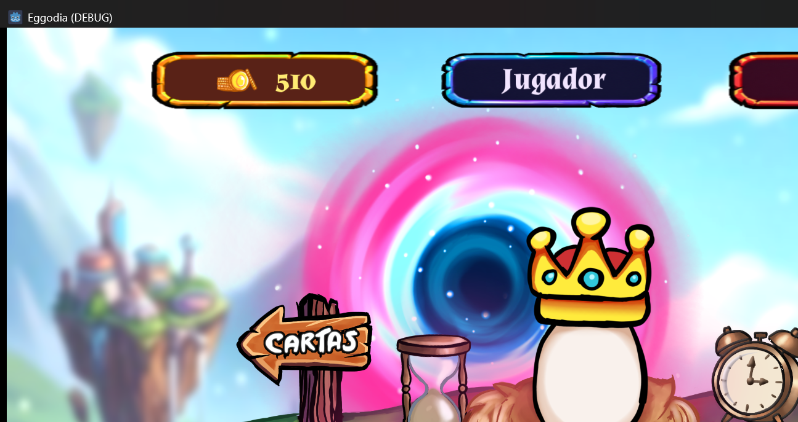
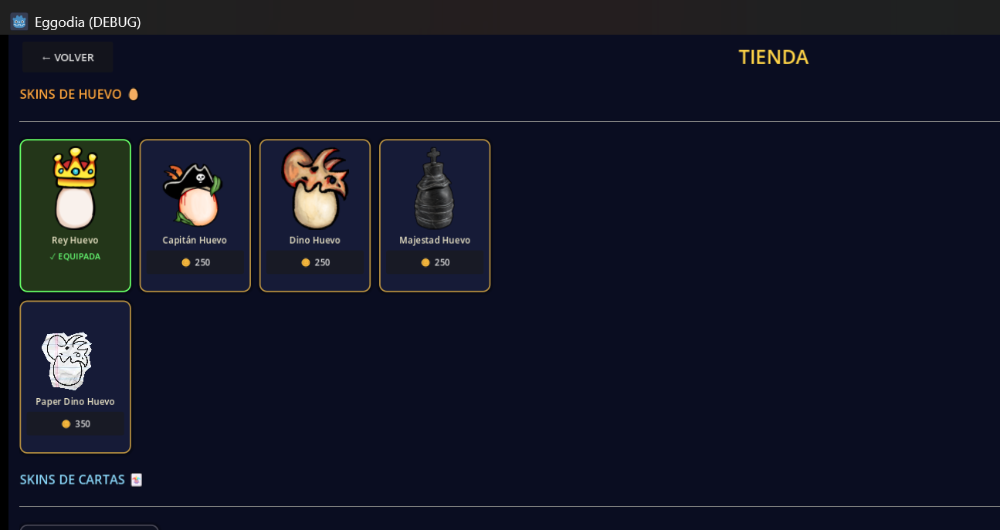
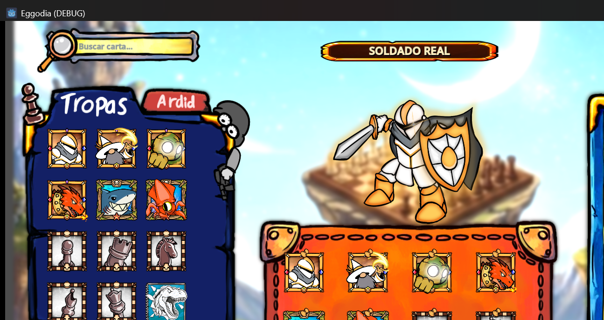

El presente documento describe el proyecto Eggodia, un videojuego para dispositivos Android desarrollado como proyecto final para Casa Abierta. El escrito incluye el enlace de descarga de la aplicación, las credenciales de acceso, las capturas del ambiente inicial del juego y una explicación de su funcionamiento.
El juego se distribuye como un archivo APK instalable en dispositivos Android. Se aloja en Google Drive como una carpeta pública de descarga:
https://drive.google.com/drive/folders/1JCkD1l_6C_888zdqzfZU-WK_OU90tSqb
El archivo se denomina Eggodia.apk y ocupa aproximadamente 223 MB. Requiere Android 8.0 o superior. Para instalarlo, el usuario debe descargar el archivo desde el enlace anterior, permitir la instalación de aplicaciones de origen desconocido en la configuración de seguridad del dispositivo, ejecutar el archivo descargado y confirmar la instalación. Una vez instalado, el juego aparece como Eggodia en el menú de aplicaciones.
El código fuente del proyecto se aloja en un repositorio privado de GitHub (github.com/JeremyGomezf/Eggodia), con 161 commits registrados y cuatro contribuyentes.
La modalidad multijugador en línea requiere un servidor de respaldo que actualmente se ejecuta en Linux y no ha sido desplegado públicamente. Para la evaluación se recomienda utilizar el modo VS BOT, el cual es completamente funcional sin conexión a internet.
El juego incorpora un modo de acceso como Invitado que no requiere registro. El usuario puede probar todas las funciones del modo offline sin necesidad de credenciales. Al ingresar como Invitado se muestra el nombre correspondiente junto con el nivel inicial y las monedas de arranque, lo que permite acceder a la Tienda, al constructor de mazos y a las partidas contra el bot.
El sistema de registro e inicio de sesión está implementado y disponible en la aplicación, pero su uso completo depende del servidor mencionado en la sección anterior.
A continuación se presentan tres capturas del juego que muestran, respectivamente, la pantalla de inicio, la sección de Tienda y el constructor de mazos.
Figura 1
Pantalla de inicio del juego

Nota. Menú principal de Eggodia. Se observa el contador de monedas del jugador, el nombre de usuario en el modo Invitado, y el acceso al constructor de mazos mediante el botón Cartas. En el centro aparece la mascota del juego (el Rey Huevo) acompañada del reloj de arena y del despertador que enmarcan el portal principal.
Figura 2
Sección Tienda

Nota. Sección Tienda del juego. Se muestran los cosméticos disponibles: cinco variantes o skins de huevo (Rey Huevo, Capitán Huevo, Dino Huevo, Majestad Huevo y Paper Dino Huevo). Cada cosmético tiene un costo en monedas obtenidas al finalizar partidas. En la parte inferior se anticipan las próximas skins de cartas.
Figura 3
Constructor de mazos

Nota. Pantalla del constructor de mazos. En el panel izquierdo se presenta la colección completa de tropas del jugador, en el panel central el mazo que se está armando y en el panel derecho los datos de la carta seleccionada (nombre, puntos de vida, ataque, defensa, serie y habilidad especial).
Eggodia es un videojuego de cartas por turnos para dispositivos móviles Android, ambientado en cuatro eras: Primordial, Medieval, Moderna y Mística. La propuesta se inspira en títulos como Clash Royale y Hearthstone, pero incorpora mecánicas propias enfocadas en partidas cortas y de alta estrategia.
El jugador ingresa al juego como Invitado o con una cuenta registrada. Desde el menú principal accede a la sección Cartas para construir un mazo de ocho unidades, elegidas de una colección de trece tropas disponibles, que incluyen dragones, gólems, dinosaurios, soldados y piezas de ajedrez. Una vez armado el mazo, el jugador selecciona el modo VS BOT para enfrentarse a un oponente controlado por el juego, o bien el modo Online para partidas contra otros jugadores.
La partida inicia con una fase de apertura en la que ambos participantes colocan tres tropas en sus respectivos carriles de invocación. A partir de ese momento se alternan los turnos, disponiendo cada jugador de una cantidad limitada de energía (entre tres y cinco puntos, según el turno) para invocar nuevas tropas, atacar, defender o activar habilidades especiales. La partida termina cuando uno de los jugadores reduce a cero los puntos de vida del rival, o cuando se agota el tiempo máximo de cinco minutos, en cuyo caso gana quien conserve más puntos de vida.
Al finalizar la partida el jugador recibe monedas que se acumulan en su perfil y que puede utilizar en la Tienda para desbloquear cosméticos, actualmente disponibles como skins de huevo.
El proyecto incorpora un sistema de tipos elementales compuesto por cinco categorías (Fuego, Agua, Naturaleza, Metal y Sombra) con relaciones de ventaja y desventaja mutuas al estilo de piedra, papel o tijera de cinco vías. Adicionalmente, el sistema de eras aporta un segundo multiplicador de daño según la era de origen de la tropa. Los aciertos críticos ocurren con probabilidad aleatoria y multiplican el daño resultante.
El modo VS BOT emplea un bot con lógica de decisión adaptativa que ajusta su dificultad entre tres niveles (Fácil, Normal y Difícil) según el desempeño del jugador, con el objetivo de mantener el desafío en un nivel adecuado. El juego también cuenta con un sistema de logros, una economía persistente que sobrevive al cierre de la aplicación, un sistema de niveles para el jugador, un bestiario con la información completa de cada tropa, un tutorial automático que se muestra en la primera partida y un historial de batalla desplegable que registra en tiempo real las acciones ocurridas durante el combate.
| Componente | Tecnología |
|---|---|
| Motor de videojuego | Godot Engine 4.6.1 (Mono, C#) |
| Servidor de respaldo | ASP.NET Core 8 (Linux) |
| Base de datos | SQLite |
| Plataforma de destino | Android (APK, arm64 y arm7) |
| Lenguaje de programación | C# 12 (.NET 8) |
| Control de versiones | Git y GitHub |
La versión entregada corresponde a una fase Beta pública en pruebas. Se encuentran implementados el sistema de batalla completo con bot adaptativo, las trece tropas con sus habilidades únicas y tipos elementales asociados, el sistema de eras y ventajas, el constructor de mazos con la colección completa, los menús principales, el tutorial, el bestiario y las opciones, el modo Invitado junto con el sistema de registro e inicio de sesión, el sistema persistente de monedas y la Tienda de cosméticos con las cinco skins de huevo mencionadas.
Están pendientes para la versión final el despliegue del servidor de respaldo en Linux, el cual habilitará el modo Online, la ampliación del catálogo de la Tienda con skins de cartas y la incorporación de nuevas eras y facciones desbloqueables.
Godot Engine Contributors. (2024). Godot Engine 4.6 [Software]. https://godotengine.org
Microsoft. (2024). ASP.NET Core 8.0 documentation. https://learn.microsoft.com/aspnet/core
SQLite Consortium. (2024). SQLite database engine. https://sqlite.org